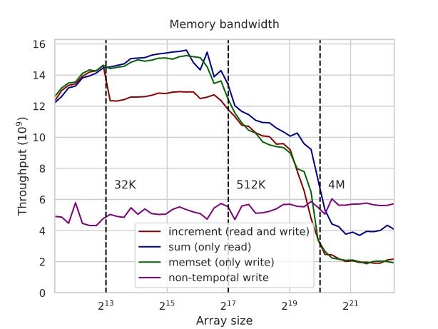
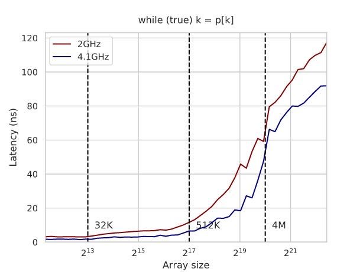
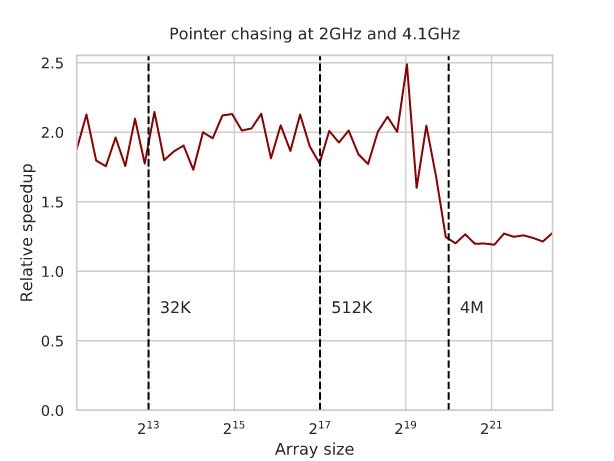
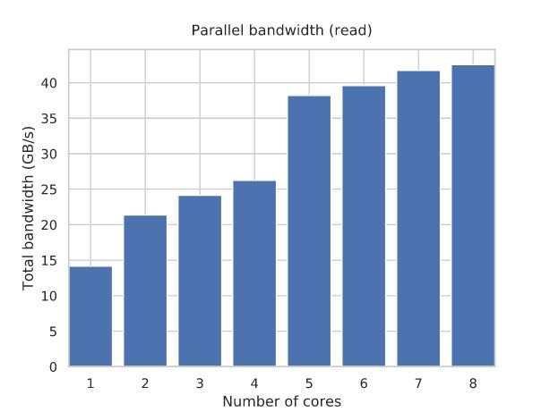
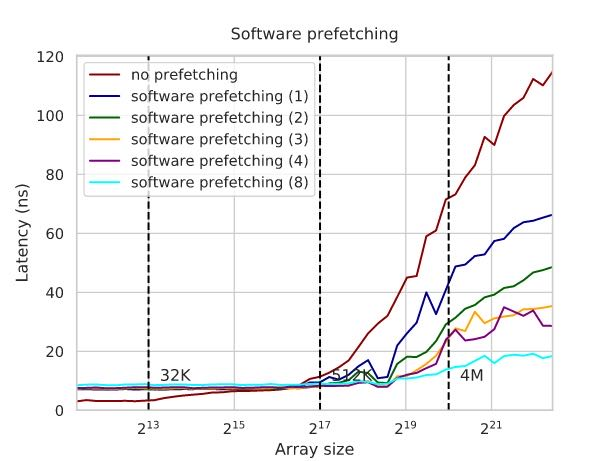
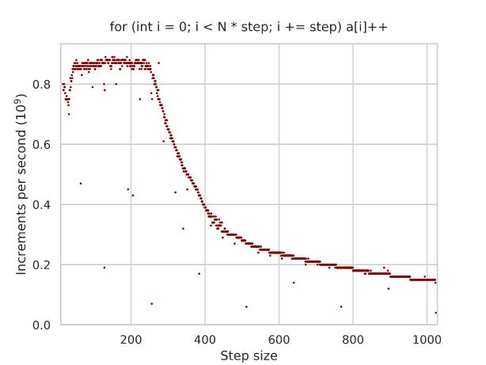
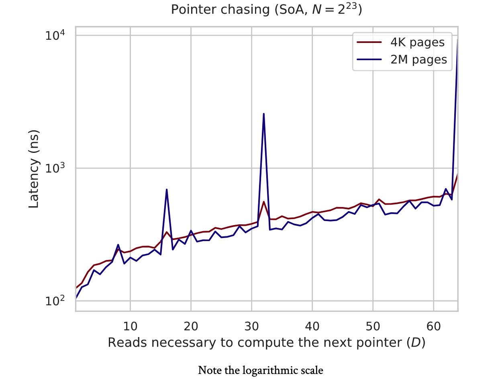

Algorithmica RAM & CPU Caches
https://en.algorithmica.org/hpc/cpu-cache/
工具可以查看L1/L2/L3 Cache情况. 然后如果跑测试的话最好把boost mode关闭
As before, I will be running all experiments on Ryzen 7 4700U, which is a “Zen 2” CPU with the following main cache-related specs:
8 physical cores (without hyper-threading) clocked at 2GHz (and 4.1GHz in boost mode — which we disable);
- 256K of 8-way set associative L1 data cache or 32K per core;
- 4M of 8-way set associative L2 cache or 512K per core;
- 8M of 16-way set associative L3 cache, shared between 8 cores;
- 16GB (2x8G) of DDR4 RAM @ 2667MHz.
You can compare it with your own hardware by running dmidecode -t cache or lshw -class memory on Linux or by installing CPU-Z on Windows. You can also find additional details about the CPU on WikiChip and 7-CPU. Not all conclusions will generalize to every CPU platform in existence
使用non-temporal write的情况，可以看到在data超过L3 cache的时候，non-temporal比only-read效率还要高两倍。这个可以解释为non-temporal几乎相当于异步操作，所以可以做到比较高的带宽，而read需要等待数据返回所以延迟比较高。

const __m256i zeros = _mm256_set1_epi32(0); for (int i = 0; i + 7 < N; i += 8) _mm256_stream_si256((__m256i*) &a[i], zeros);
On the one hand, if the array is small enough to fit into the cache, and we actually access it some short time after, this has a negative effect because we have to read entirely it from the RAM (or, in this case, we have to write it into the RAM instead of using a locally cached version). And on the other, this prevents read-backs and lets us use the memory bus more efficiently.
In fact, the performance increase in the case of the RAM is even more than 2x and faster than the read-only benchmark. This happens because:
- the memory controller doesn’t have to switch the bus between read and write modes this way;
- the instruction sequence becomes simpler, allowing for more pending memory instructions;
- and, most importantly, the memory controller can simply “fire and forget” non-temporal write requests — while for reads, it needs to remember what to do with the data once it arrives (similar to connection handles in networking software).
Theoretically, both requests should use the same bandwidth: a read request sends an address and gets data, and a non-temporal write request sends an address with data and gets nothing. Not accounting for the direction, we transmit the same data, but the read cycle will be longer because it needs to wait for the data to be fetched. Since there is a practical limit on how many concurrent requests the memory system can handle, this difference in read/write cycle latency also results in the difference in their bandwidth.
memory latency相对比较好测量，使用的技术可以是pointer-chasing技术让CPU没有办法预测到内存读取位置。下面创建cycle的方法非常有意思值得学习。
int p[N], q[N]; // generating a random permutation iota(p, p + N, 0); random_shuffle(p, p + N); // this permutation may contain multiple cycles, // so instead we use it to construct another permutation with a single cycle int k = p[N - 1]; for (int i = 0; i < N; i++) k = q[k] = p[i]; for (int t = 0; t < K; t++) for (int i = 0; i < N; i++) k = q[k];
下图还和boost mode情况下面进行对比：
- 超过了L3 cache之后延迟大约在100ns上下，大约是200cycles.
- 4.1Ghz相比2Ghz延迟还是要更低，在L3 cache之前大约是2倍，超过了之后大约在1.5倍
- 这个1.5倍可以解释为访问memory的时候要需要一些CPU操作去检查是否在Cache中，而这个检查操作4.1Ghz是比较有优势的。


分析内存密集型算法的时候，应该关注访问了多少次cache line, 而不是内存读写次数。
The important practical lesson when designing and analyzing memory-bound algorithms is to count the number of cache lines accessed and not just the total count of memory reads and writes.
通常一个core是没有办法跑满内存带宽的，但是即便是多个cores同时跑的话，也需要考虑内存的拓扑结构：如果cores全部被分配在共享L3 cache上的话，那么提升可能不会那么明显，因为L3 cache可能是冲突点。所以有时候为了可以充分利用好带宽，需要了解多核结构，分配好线程。

parallel taskset -c 0,1 ./run ::: {0..1} # L3 cache sharing parallel taskset -c 0,4 ./run ::: {0..1} # no L3 cache sharing
When looking at the RAM section of the first graph, it may seem that with more cores, the per-process throughput goes ½, ⅓, ¼, and so on, and the total bandwidth remains constant. But this isn’t quite true: the contention hurts, but a single CPU core usually can’t saturate all of the RAM bandwidth.
If we plot it more carefully, we see that the total bandwidth actually increases with the number of cores — although not proportionally, and eventually approaches its theoretical maximum of ~42.4 GB/s:
Note that we still specify processor affinity: the k-threaded run uses the first k cores. This is why we have such a huge performance increase when switching from 4 cores to 5: you can have more RAM bandwidth if the requests go through separate L3 caches.
In general, to achieve maximum bandwidth, you should always split the threads of an application symmetrically.
hardware prefetch几乎是没有性能回退的，因为它只有在memory/cache总线不忙的时候才进行工作，而software prefetch则有可能产生回退，因为它有可能与其他程序产生竞争，所以在软件代码中最好进行测量。另外就是software prefetch的长度非常讲究，不能太短也不能太长，文章中给了个例子来测试不同prefetch distance的影响，这个case里面（估计只有一个程序运行？）distance越大似乎越好。

Note that this is an artificial example, and you actually fail more often than not when trying to insert software prefetching into practical programs. This is largely because you need to issue a separate memory instruction that may compete for resources with the others. At the same time, hardware prefetching is 100% harmless as it only activates when the memory and cache buses are not busy.
You can also specify a specific level of cache the data needs to be brought to when doing software prefetching — when you aren’t sure if you will be using it and don’t want to kick out what is already in the L1 cache. You can use it with the _mm_prefetch intrinsic, which takes an integer value as the second parameter, specifying the cache level. This is useful in combination with non-temporal loads and stores.
memory paging的page size对于TLB影响很大，通常有2级TLB分别是64, 2048 entries， 如果page size = 4K的话大约可以覆盖512K, 8M大小。也就是说，8MB内存内部访问，内存地址转换非常快，但是超过之后涉及到VM部分那么影响下降就比较严重。这个测试中避免了L2 cache, D >= 16. (L3 cache使用的是物理地址而不是虚拟地址)
const int N = (1 << 13); int a[D * N]; for (int i = 0; i < D * N; i += D) a[i] += 1;

This anomaly is also due to the cache system, although the standard L1-L3 data caches have nothing to do with it. Virtual memory is at fault, in particular the translation lookaside buffer (TLB), which is a cache responsible for retrieving the physical addresses of the virtual memory pages.
On my CPU, there are two levels of TLB:
- The L1 TLB has 64 entries, and if the page size is 4K, then it can handle 64 × 4K = 512K64×4K=512K of active memory without going to the L2 TLB.
- The L2 TLB has 2048 entries, and it can handle 2048 × 4K = 8M2048×4K=8M of memory without going to the page table.
How much memory is allocated when DD becomes equal to 256? You’ve guessed it: 8K × 256 × 4B = 8M8K×256×4B=8M, exactly the limit of what the L2 TLB can handle. When DD gets larger than that, some requests start getting redirected to the main page table, which has a large latency and very limited throughput, which bottlenecks the whole computation.
为了可以管理更大的内存，可以开启huge page机制，这个对于随机访问大范围内存非常有效果，缺点就是可能会稍微多占用内存，所以通常是在大内存服务器时候使用。但是如果可以的话，还是尽可能地spatially control内存使用情况。（这个是否可以在分配大内存的时候判断，比如array_size > 8MB的话，那么使用2MB大页内存似乎是个不错的选择）
Modern operating systems allow us to set the page size both globally and for individual allocations. CPUs only support a defined set of page sizes — mine, for example, can use either 4K or 2M pages. Another typical page size is 1G — it is usually only relevant for server-grade hardware with hundreds of gigabytes of RAM. Anything over the default 4K is called huge pages on Linux and large pages on Windows. In general, enabling huge pages is a good idea when you have any sort of sparse reads, as they usually slightly improve and (almost) never hurt performance.
That said, you shouldn’t rely on huge pages if possible, as they aren’t always available due to either hardware or computing environment restrictions. There are many other reasons why grouping data accesses spatially may be beneficial, which automatically solves the paging problem.
// $ cat /sys/kernel/mm/transparent_hugepage/enabled // always [madvise] never #include <sys/mman.h> void *ptr = std::aligned_alloc(page_size, array_size); madvise(ptr, array_size, MADV_HUGEPAGE);
最后面一节关于SoA和AoS的讨论看的有点云里雾里 https://en.algorithmica.org/hpc/cpu-cache/aos-soa/. 里面提到了两个问题，一个是L3 cache这个东西使用的是物理地址进行判断的。这个实验里面设计上使用huge page 2MB, 然后按照2MB stride size连续访问，这样在L3 cache上物理地址就会产生严重冲突。而使用page size = 4KB的话，这个只是在虚拟地址上地址连续，而在物理地址上可能是分隔的。（我也不知道自己有没有理解，就当做理解了吧。。。）

I doubt that even the engineers who design memory controllers can explain what’s happening right off the bat.
In short, the difference is because, unlike the L1/L2 caches that are private to each core, the L3 cache has to use physical memory addresses instead of virtual ones for synchronization between different cores sharing the cache.
When we are using 4K memory pages, the virtual addresses get somewhat arbitrarily dispersed over the physical memory, which makes the cache associativity problem less severe: the physical addresses will have the same remainder modulo 4K bytes, and not N / D as for the virtual addresses. When we specifically require huge pages, this maximum alignment limit increases to 2M, and the cache lines receive much more contention.
This is the only example I know when enabling huge pages makes performance worse, let alone by a factor of ten.